Seja bem-vindo ao meu portfólio.
Meu nome é Gustavo, estudante de programação.

.svg)
.svg)
Sobre mim
Desde pequeno, curioso por esse mundo de internet, computadores e jogos, sempre gostei muito de cutucar computadores, abrir, mexer neles, até que descobri que existia profissões relacionadas a essa minha curiosidade, comecei com micro-computadores, formatando, limpando e até montando de amigos e parentes, então entrei de cabeça nesse mundo da programação desde novembro de 2021, estou até hoje estudando Front-End, pretendo me tornar um profissional capacitado na área.
Atualmente estou estudando
.svg)

HTML5

CSS3
s
JavaScript
Meus projetos favoritos feitos por mim
.svg)
Esse projeto foi feito inspirado no jogo Limbo (um ótimo jogo aliás, recomendo muito) ele tem uma paleta de cores bem minimalista, usando tons de cinza e um preto, então aproveitei que gosto muito dele e tive a ideia de criar um site.
Uma tela de login para um site qualquer com propósito de estudar toda a teoria do HTML5 e do CSS3. Inspiração e todo conteúdo desse site dedicado ao Markzuel.
Tela de cadastro para a tela de login anterior, feito apartir de um tutorial do Markzuel com o próposito de estudar e praticar a teoria do HTML5 e CSS3